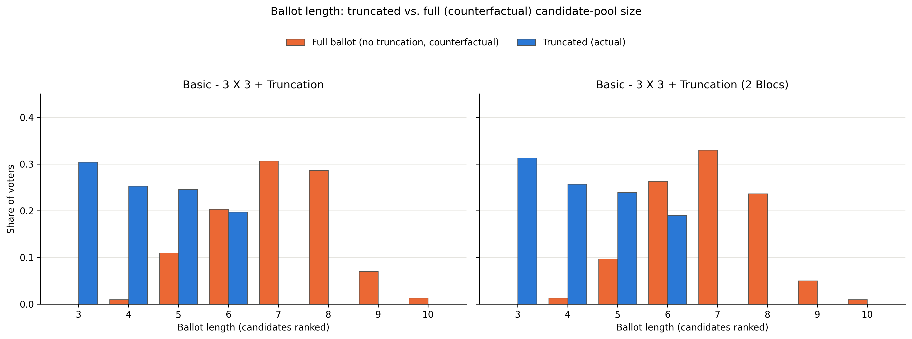

Abstract
We analyze geography, demographics, and voting patterns in San Diego, CA in order to compare the likely performance of various systems of electing members of the City Council. This report seeks to work with the most recent demographic data from 2020 Census, new election systems, the introduction of score-based voting, and more refined techniques. We will additionally be examining the impacts of the included reform proposals on representation for Asian voters, a community that represents 20% of the voting age population in the city.
Background
In 2011, San Diego City proposed for the first time a 9-district plan with one single member district representation ("2012 San Diego elections," Wikipedia; "After Redistricting, Advocates Argue for More Districts. Or None At All.," Voice of San Diego, Feb. 23, 2022). Since then the city has kept the 9 single-member council districts and has gone through a redistricting process in 2021 using the 2020 Census ("Redistricting Commission," City of San Diego; "San Diego finalizes new map of City Council districts," KPBS, Dec. 17, 2021). On the other hand, San Diego has staggered elections with a 4-year cycle--even districts (2, 4, 6, 8) in one cycle, odd districts (1, 3, 5, 7, 9) in the next. Additionally, the city uses a two-round system with a primary held in June followed by a runoff in November between the top-two candidates in each district.
It is valid to state that this redistricting process, like every one since the City Charter created the independent Redistricting Commission in 1992, was carried out by that independent commission rather than the city council ("City Charter, Article II," §§5-5.1; "Redistricting Commission," City of San Diego). Based on that, it is interesting to analyze how proportionality has been affected or improved for all communities. While White and Hispanic voters seem to achieve at least proportional representation regularly, the Asian population seems to be growing, yet they are still consistently underrepresented within city government. Black voters see consistent representation from their preferred candidates over time - primarily within District 4.
This report employs new and updated tools like GerryChain and VoteKit in order to simulate a variety of electoral systems and scenarios. Primarily, we look at simulations of multi-member districts elected by Single Transferable Vote (STV), low target-bloc turnouts, and Cambridge Ballot truncation.
Methodology
3.1 Districting Plan Ensembles
To generate a sufficient number of distinct districting plans, we use GerryChain to run a 10,000-step ReCom chain and subsample 100 plans that will be used in our election simulations. We do this for every set of elections that require a different number of districts.
An ensemble depends only on how many districts a plan has, not on how many seats each district fills, so every configuration sharing a district count draws on the same set of maps — for exapmle, the 3 × 3 and 3 × 5 configurations both use three-district plans and differ only in district magnitude.
Additionally, we run elections where San Diego city is represented as one single district. In these scenarios we don't need to run GerryChain, but we do still perform 100 subsamples. The reason for this is that for all subsampled maps we generate random candidate pools of variable size whose slate composition is roughly proportional to bloc VAP share.
The table below lists every districting configuration used in this study, written as districts × seats per district, and the scenarios built on each.
| Configuration | Seats | Ensemble | Scenarios |
|---|---|---|---|
| 1 × 3 | 3 | Single plan | Hybrid System — 1 × 3 tier |
| 1 × 6 | 6 | Single plan | City Charter Amendment Proposal — 1 × 6 tier, both models |
| 1 × 9 | 9 | Single plan | Nine Seats At-Large — both models |
| 1 × 15 | 15 | Single plan | Fifteen Seats At-Large STV — both models |
| 3 × 3 | 9 | ReCom, 100 plans | Basic, Truncation, Diverse Preferences, Low Availability, Low Turnout — all both models |
| 3 × 4 | 12 | ReCom, 100 plans | Hybrid System — 3 × 4 tier |
| 3 × 5 | 15 | ReCom, 100 plans | 3x5 STV (4-bloc); Basic 3 × 5 (2-bloc) |
| 5 × 3 | 15 | ReCom, 100 plans | 5x3 STV (4-bloc); Basic 5 × 3 (2-bloc) |
| 9 × 1 | 9 | ReCom, 100 plans | 9 × 1 IRV — both models; 9x1 Plurality (4-bloc); City Charter — 9 × 1 tier |
| 12 × 1 | 12 | ReCom, 100 plans | 12 × 1 IRV — both models |
| 15 × 1 | 15 | ReCom, 100 plans | Alternative Electoral Systems — both models |
The two hybrid scenarios — the City Charter Amendment Proposal and the Hybrid System — each pair two configurations in one election, filling part of the body from districts and the rest citywide, so they appear in two rows.
3.2 Voter Blocs and Candidate Slates
Mirroring past reports, we consider the largest communities of interest when identifying blocs of voters with shared preferences and slates of candidates with similar policies and positions. In San Diego, much of the attention in redistricting and electoral reform has been focused on communities and voters of color - particularly the Black, AAPI, and Latino communities. We carry that spirit into this report by choosing to focus on these three groups as distinct voting blocs in addition to the "WAIO (White/American Indian/Other Race)" bloc. The decision to merge White, American Indian, and Other Race voters into a single bloc is in keeping with methodological norms of MGGG electoral analysis.
3.2.1 Two Bloc vs. Four Bloc Models
In this report, we model voting blocs in two ways. The first is the two-bloc model and has been the standard for this type of electoral analysis in city council elections. In the two-bloc model, we generally designate a bloc for the city-wide majority group (typically White voters) and one for voters of color (POC). Here, our majority group is WAIO and our POC group consists of Black, Latino, and AAPI voters. With the four-bloc model, we provide a more granular view of electoral outcomes for each bloc by modeling them separately. Here we have Black voters (BLK), AAPI voters (AAPI), Latino voters (HIS), and White voters with the additon of Indigigenous American and Other Race voters (WAIO).
Note that while we attempt to maintain consistency in modeling decisions between the two-bloc and four-bloc siulations, these are fundamentally different approaches in the analysis of electoral systems. For instance, it's possible that the combined POC bloc has enough voter share and crossover support to achieve proportional representation within a given electoral system - and the reader might interpret that all constituent groups within achieve their own share of seats by virtue of belonging to the whole, which is not necessarily true. With the four-bloc approach, we do get to see the outcomes for each bloc individually - with the caveat that each bloc has its own cohesion, turnout, and dirichlet parameters set that changes how crossover and within-slate support functions. Additionally, because we take an "exaggerated proportion" approach to per-slate candidate availability, the stochastic generation of candidates in the overall pool may lead to instances in which votes get split between two minority candidates in such a way that leads to a seat being lost in a particular district. We present this (admittedly contrived) example not as a defintiive explanation of the exact differences between two and four-bloc modeling, but as a point of caution when interpreting and comparing simulated election outcomes between the two.
3.2.2 Demographic Table
The voting bloc variables were constructed using Decennial Census variables from 2020 following the bloc classification methodology of MGGG.
The six census categories below partition San Diego's voting-age population of 1,125,087. Every category is assigned to exactly one bloc, so the blocs sum to the whole electorate and no resident is counted twice or left out. The two models place American Indian and other-race voters differently: the two-bloc model counts them with POC, so POC is every voter of colour; the four-bloc model carries them with White voters in WAIO, since they cannot join BLK, HIS or AAPI without picking one arbitrarily.
| Demographic group | VAP | Share | Four-bloc | Two-bloc |
|---|---|---|---|---|
| White | 492,810 | 43.80% | WAIO | WHI |
| Hispanic | 298,979 | 26.57% | HIS | POC |
| Asian / NHPI | 229,884 | 20.43% | AAPI | POC |
| Black | 79,988 | 7.11% | BLK | POC |
| Other race | 14,593 | 1.30% | WAIO | POC |
| American Indian | 8,833 | 0.79% | WAIO | POC |
| Total | 1,125,087 | 100.00% |
Two groupings are used across the study. The four-bloc model gives Hispanic, Asian, and Black voters a bloc each alongside WAIO, producing bloc shares of 45.88% WAIO, 26.57% HIS, 20.43% AAPI, and 7.11% BLK. The two-bloc model sets White voters alone against everyone else: 43.80% WHI against 56.20% POC. The two models name their White bloc differently on purpose — WHI is White alone, WAIO is White with American Indian and other-race voters folded in — so a label always denotes one population.
The difference is not only one of labels. The four-bloc model needs a cohesion matrix asserting how each minority bloc behaves toward the other two; the two-bloc model asks instead whether a coalition of minority voters can elect candidates of its choice, which is the question these simulations are built around.
3.3 Candidate Availability and Pool Size
The decision to simulate candidate availability per-district for each voting bloc relies on evidence found from previous San Diego City council elections. For instance, the last three San Diego City Council Elections had a pattern where candidates representing the Asian and Black community run only in the districts where their own community makes up a larger share of voters across districts (2020, 2022, 2024). Analyzing the bloc distribution of San Diego 9-district plan, District 4 and 6 have the highest shares of Black and Asian communities, respectively, and candidates running in those district are predominantly from those same communitities. Likewise, it is not common to find candidates from Asian and Black running on districts with a low share of their own communities.
Similarly, evidence suggest that the number of candidate or pool size that runs for each district is not homogenous. Last 20 years of elections, the distribution of candidates running per district is diverse. On primaries, the average number of candidate is 3.5, where there has been districts bellow the mean with only 1 candidate running and districts above with 9 candidates.

Based on the previous analysis, we determine the pool size and the candidate availability per slate as variables for each district and plan. To calculate our pool size we assume the number of candidates (\(m\)) behaves as a Binomial Distribution with a floor set as the number of winner per district plus one. The floor \(k + 1\) ensures that we never have a scenario where the number of winners is equal to the number of running candidates as they will automatically will declare as winners.
The binomial distribution takes two parameters as inputs: \(n\) and \(p\).
Where:
\(k: \text{Number of winners per district}\)
\(n = \text{Maximun Number of candidate per district} - \text{Minimun Number of candidate per district} \)
\(p = \frac{E(m)- (k + 1)}{n}\)
Finally, we make an assumption that the racial composition of the slate pool will be roughly proportional to that of the VAP in each district. We use the bloc proportions to create an interval, with the intent of sampling candidates of different slates from it. However, before we do we first square each element, normalizing the “squared interval” over the sum of the squared values. This creates an “exaggeration” effect when we sample slate candidates. In other words, if a district has a large Black VAP, it's even more likely that the Black voter-preferred slate of candidates will be larger than the others. Similarly, if the Asian VAP is small it's much less likely that the Asian voter-preferred slate will have many candidates — if any, since we allow for slates to be empty. This is intended to model how community dynamics, segregation, or lack of institutional support may impact candidate availability across geography with respect to race. Finally, we modeled one scenario with a "cubic interval" for sensitivy results to increase the original scenario.
3.4 Voter Profile and Ballot Generation
For each district in all 50 district plans of our ensemble, we generate voter preference profiles — a collection of ballots from voters that rank available candidates. These rankings are determined by three of VoteKit's built-in slate ballot generators: Plackett-Luce, Bradley-Terry, and Cambridge Sampler. Plackett-Luce and Bradley-Terry model impulsive voter behavior and deliberative voter behavior respectively, while Cambridge Sampler samples from historical ballot data. Each assumes that each voter bloc has a preference interval for each slate of candidates, along with a tuple of cohesion parameters — one parameter for each slate. All generators feature a two-stage process, and they only differ in how the first stage plays out.
For PL and BT, before any ballots are drawn each bloc's preference interval is assembled by taking that bloc's cohesion for a given slate and slicing off a sub-interval of that width, then filling it in with the individual candidates of the slate according to their support. We govern the within-slate split with a set of Dirichlet alphas — in this report we hold all alphas at 1, which means that once a voter has decided to reach for a particular slate, every candidate on that slate is treated as equally preferred. The cohesion parameters (the rows of the matrices below) therefore do all the work of ordering slates against one another, while the interval handles the ordering of candidates within a slate. What separates the two models is the story we tell about how a voter walks through that interval to produce a ranking.
Cambridge Sampler functions similarly in its second stage. It's core difference is that the "slate ordering" achieved in the first stage of PL and BT is dictated by sampling from historical voting records from Cambridge, MA elections.
The Impulsive Voter
The Plackett-Luce generator builds a ballot from the top down, one position at a time. Starting from the first-place slot, a voter in bloc reaches for a candidate from slate with probability equal to that bloc's cohesion for the slate, ; whichever slate is chosen then supplies a specific candidate by sampling from that slate's preference interval without replacement. The voter repeats this for the next position, renormalizing over whatever slates still have candidates left, and keeps going until the ballot is full. We call this the impulsive voter because they never look back — each ranking is a snapshot decision made in the moment, with no reconsideration of the choices already committed higher up the ballot. Concretely, a voter picks their favorite, then their next favorite from what remains, and so on, so the probability of a given slate ordering is just the product of these sequential draws.
The Deliberative Voter
The Bradley-Terry generator instead asks the voter to weigh the ballot as a whole. Rather than filling positions in sequence, the probability of a complete ranking is proportional to the product of the pairwise slate preferences across every pair of slates on the ballot — for a ranking that places slate above slate , each such head-to-head contributes a factor of . A voter effectively runs every candidate against every other in their head and only then settles on the ordering that is most internally consistent with all of those matchups at once. We call this the deliberative voter, since the ranking reflects a considered comparison of the full field rather than a run of top-down impulses. The candidate-filling stage is identical to Plackett-Luce — once the slate ordering is fixed, specific candidates are drawn from each slate's preference interval — so the two models diverge only in how much of the ballot a voter is imagined to be considering at once.
The Cambridge Voter
Cambridge Sampler utilizes historical ballot data in the form of Cast Vote Records (CVR) from STV elections in Cambridge, MA. Similar to Slate BT and Slate PL, the voter first makes a weighted coin flip to decide which of two slates they will rank in the first position of their ballot: either a majority or minority candidate. That is, if a voter puts a majorrity candidate first, the rest of their ballot type is sampled in proportion to the number of historical ballots that started with a majority candidate. Once a ballot type is determined, the order of candidates is determined by a PL model.
It should be noted that because the Cambridge Sampler voter model is built on historical election data, it only supports two slates of candidates. Therefore, we opt to exclude it from our four-bloc simulations - though it does get included in the two-bloc simulations.
Cohesion Matrices
Rows are voter blocs, columns are candidate slates; each row sums to 1. A cell is the probability that a voter of that bloc supports a candidate of that slate, so the diagonal is within-group cohesion and the off-diagonal entries describe crossover.
Two-bloc simulations.
| bloc ↓ / slate → | WHI | POC |
|---|---|---|
| WHI (White) | 0.80 | 0.20 |
| POC (Black, Hispanic, Asian/NHPI, American Indian, other race) | 0.11 | 0.89 |
The POC bloc is modelled as slightly more cohesive than WHI — 0.89 against 0.80 — which is what lets it win a share of seats above its share of the modelled electorate in several scenarios, despite lower turnout.
Four-bloc simulations.
| bloc ↓ / slate → | WAIO | HIS | AAPI | BLK |
|---|---|---|---|---|
| WAIO (White, American Indian, other race) | 0.80 | 0.05 | 0.10 | 0.05 |
| HIS (Hispanic) | 0.10 | 0.80 | 0.05 | 0.05 |
| AAPI (Asian/NHPI) | 0.15 | 0.03 | 0.80 | 0.02 |
| BLK (Black) | 0.05 | 0.10 | 0.05 | 0.80 |
This matrix is used by the Basic scenarios and their variations — Basic 3 × 3, 3 × 5, 5 × 3, Truncation, Diverse Preferences, Low Availability, and Low Turnout. The Alternative Electoral Systems, At-Large, IRV, and City Charter Amendment Proposal scenarios use the same matrix with one row differing: their Hispanic bloc splits its crossover 0.05 to WAIO and 0.10 to BLK, rather than 0.10 and 0.05.
| bloc ↓ / slate → | WAIO | HIS | AAPI | BLK |
|---|---|---|---|---|
| HIS (Hispanic) — variant row | 0.05 | 0.80 | 0.05 | 0.10 |
3.5 Cambridge Ballot Truncation
The ballots generated in Section 3.4 are, by default, full rankings — every voter ranks every candidate on the slate. However, we introduce a new scenario where voters don't all behave the same way, allowing for the existence of incomplete and bullet ballots.
Cambridge has run ranked-choice elections continuously since 1941, and a subset of those elections from 2009–2017 shows real dispersion in ballot length. Moreover, this distribution differs between two groups: the historical minority and majority slates.
To capture this behavior, we introduce a truncation process calibrated to real ranked-choice ballots from Cambridge, MA's 2009–2017 municipal elections. Using the same structure as VoteKit, we work with two empirical distributions over ballot length: one for ballots that started with a candidate from the historical majority (white) slate, and one for ballots that started with a candidate from the historical minority (Black, Asian, or Hispanic) slate.
Finally, the PL and BT preference profiles are truncated to a ballot length sampled from the historical distribution corresponding to each ballot's minority or majority group.
3.6 Voting Rules
Elections for each district are simulated using VoteKit's Elections module. We use the following voting rules with the corresponding district configurations:
| Voting Rule | District Configs | Seats/District | Description |
|---|---|---|---|
| Plurality | 9 × 1 | 1 (single-winner) | Voters' first choices are tallied and the candidate with the most votes wins outright — no majority required. |
| IRV (Instant-Runoff Voting) | 9 × 1 | 1 (single-winner) | The single-winner case of STV: last-place candidates are eliminated round by round and their ballots transferred to the next-ranked choice until one candidate holds a majority. |
| STV (Single Transferable Vote) | 3 × 3, 1 × 9 (at-large) | 3 or 9 (multi-winner) | Multi-winner ranked-choice rule using the Droop quota: candidates reaching the quota are elected and their surplus is redistributed, while last-place candidates are eliminated and transferred, until all seats are filled. |
For each system, tiebreaks are performed randomly when needed.
Conclusion
[Conclusion to be written — edit
docs/prose/conclusion.md.]
Results by Scenario
Warmup - 3 X 3 STV
In this scenario, we explore the expected outcomes of a hypothetical electoral shift that redistricts San Diego into three districts with three elected members in each - running three different elections using Single Transferable Vote (STV), Cumlative, and Limited voting rules. STV uses the deliberative and impulsive models (representing 3000 elections each) while Cumulative and Limited use the "Name Cumulative" model that allows for voters to "plump" their votes on preferred candidates.
City Charter Amendment Proposal
[Description to be written — edit
docs/prose/runs/city-charter-amendment-proposal.md.]
Alternative Electoral Systems
Here, we take San Diego's current 9 X 1 district configuration and explore the expected outcomes of alternative election systems. San Diego's current electoral system is closest to Top Two, where the the top-two vote getters in a primary election advance to a runoff general election. We also look at Alaska, which is similar to Top Two but takes the top four winners in the primary and uses STV in the general election. Plurality is included due to its current popularity and status as the "default" for American elections, while IRV is included due to its rising popularity.
Basic - 3 X 3 + Truncation
[Description to be written — edit
docs/prose/runs/basic-3-x-3-truncation.md.]
Cross-Run Comparison
Appendix
Appendix A. Bounded Ballot Truncation
Section 3.5 describes the truncation applied by default to every scenario's PL and BT profiles: each ballot's ranked length is drawn from one of two empirical Cambridge distributions, chosen by whether the ballot's first choice belongs to the historical majority or minority slate. The Truncation scenario (3 × 3, both bloc models) goes one step further, restricting those same distributions to a fixed length window before sampling from them. This appendix documents that restriction and validates it against the scenario's own generated ballots.
A.1 Restricting the Historical Distributions
The historical distributions place non-trivial probability mass across the full range Cambridge's ballots have ever taken, including ballots as short as one candidate and as long as the slate pool itself. The Truncation scenario instead clips each of the two historical distributions to an inclusive length window and renormalizes what remains, so the result is still a valid probability distribution — just one confined to a narrower range than Cambridge's raw history. Its configs, configs/basic-truncation.json for the four-bloc model and configs/2b-basic-truncation.json for the two-bloc model, set that window to [3, 6]: no simulated voter in either version of the scenario ranks fewer than three or more than six candidates, however long their unrestricted ballot would otherwise have run.
Bounding the distribution this way models a ballot design constraint rather than a behavioral one — a jurisdiction that caps how many candidates a voter may rank, as opposed to a voter who simply stops ranking early on their own. It asks a different question from the unbounded truncation applied everywhere else: not "how does ballot length vary when voters behave like Cambridge's electorate," but "how do outcomes change when every voter's ballot is confined to the same length window."
A.2 Validation
To confirm the bound is respected, we compare each truncated ballot against the length it would have had without truncation — the full slate ranking the PL/BT generators produced before Cambridge truncation was applied. The figure below plots both distributions for the Truncation scenario's 3 × 3 configuration: once under the four-bloc model, where WAIO, HIS, AAPI, and BLK are modeled as four separate blocs, and once under the two-bloc model, where WAIO is set against a single pooled POC bloc.

Under both bloc models, the truncated (actual) ballots fall entirely within the configured [3, 6] window, while the full, untruncated ballots those same voters would otherwise have cast extend out to ten — this holds regardless of how finely the electorate is split into blocs, since the truncation lengths are drawn independently of bloc identity once a ballot's majority/minority group is fixed. Over the lengths the two distributions share, five and six, they track each other closely, which is expected: the bounded distribution is the historical one restricted and renormalized, not a distribution drawn from a different model.